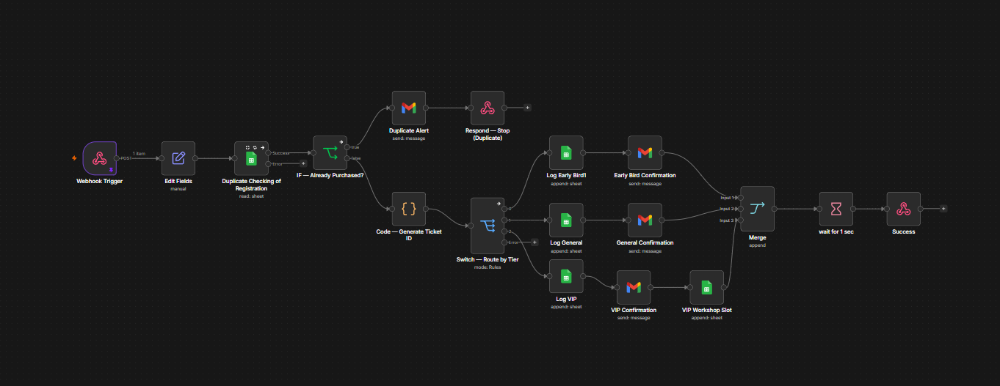
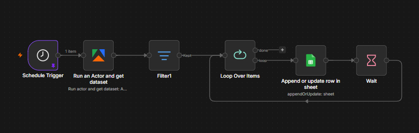

applying to jobs manually was slow, so i built a Slack-triggered pipeline
that scrapes listings, scores them against my resume with an AI agent,
and posts the results back. the interesting part was not the scraping.
the model kept sending malformed JSON, so i wrote a parser:
strip markdown fences, try JSON.parse, fall back to regex, apply safe defaults.
that parser now lives in every AI workflow i build. reusing it in a public
webinar also meant sanitizing a hardcoded API key before sharing it.
three advisor personas pulling context from Google Docs and streaming
Gemini. built during my internship and shipped to the intern cohort.
Google OAuth with a domain allowlist, Supabase with row-level security.
passing the JWT through correctly was annoying even though the idea is simple.
the team uses it daily.
the org needed a web presence. i did the branding and built a site
a 120-person cloud community could actually keep. static HTML/CSS/JS
on purpose: a React project only i understand is worse than a file
the next officer can edit.
HTML · CSS · JavaScript

community ops · 2026
Zero-touch attendee pipeline
webhook to a personalized Gmail confirmation, with duplicate detection
and tier routing (general / VIP / speaker) in between. the dedupe check
is the part most people skip. without it, the workflow is a toy, and
attendees get two emails for one event.
ingests buying signals, scores leads, enriches contacts via Hunter.io,
validates emails, and drafts outbound. i planned to use NeverBounce,
then found usage costs at this volume, so i swapped it for a free MX
lookup plus a format check. same invalid domains, no extra bill.
also hit a JSearch nesting bug and fixed it with a normalization step
before scoring.
n8n · Hunter.io · Gmail API

automation · 2026
Google Maps lead scraper
scheduled pipeline that scrapes business leads from Google Maps via an Apify actor,
filters, then loops in batches. parallel execution hit rate limits fast.
batching fixed it.
published article from my Tutorials Dojo internship. methodology,
prompt design, and model comparison. required running the evaluations,
not just writing about them.